Vuốt để bắt đầu
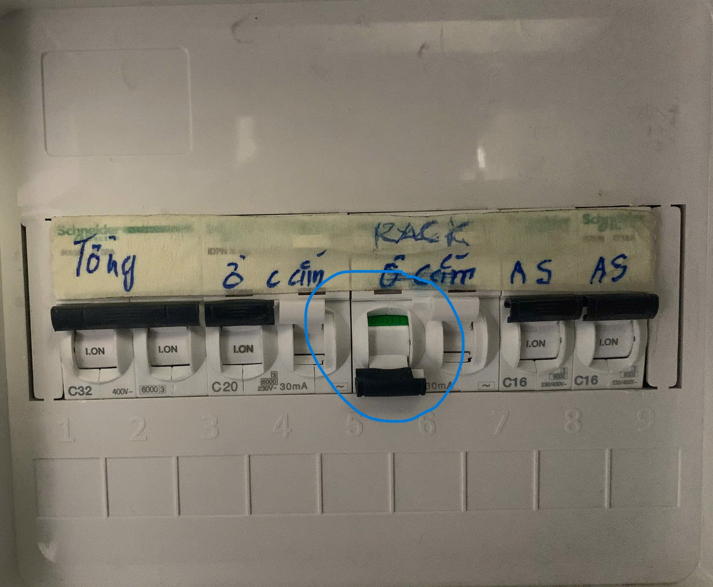
Nếu thiết bị chưa bật vui lòng bật cầu giao rack và ổ cắm và chờ 5-10 phút
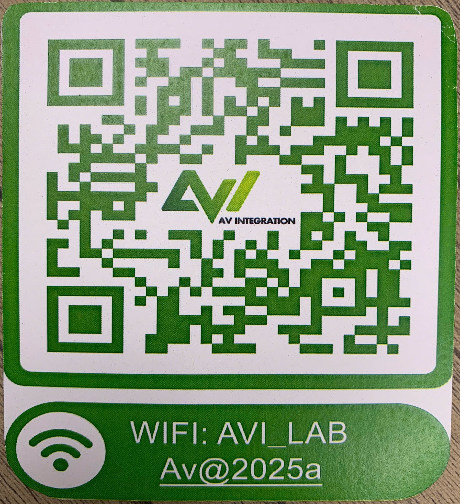
Kết nối máy tính và điện thoại vào mạng của phòng họp
Chọn phòng họp lớn
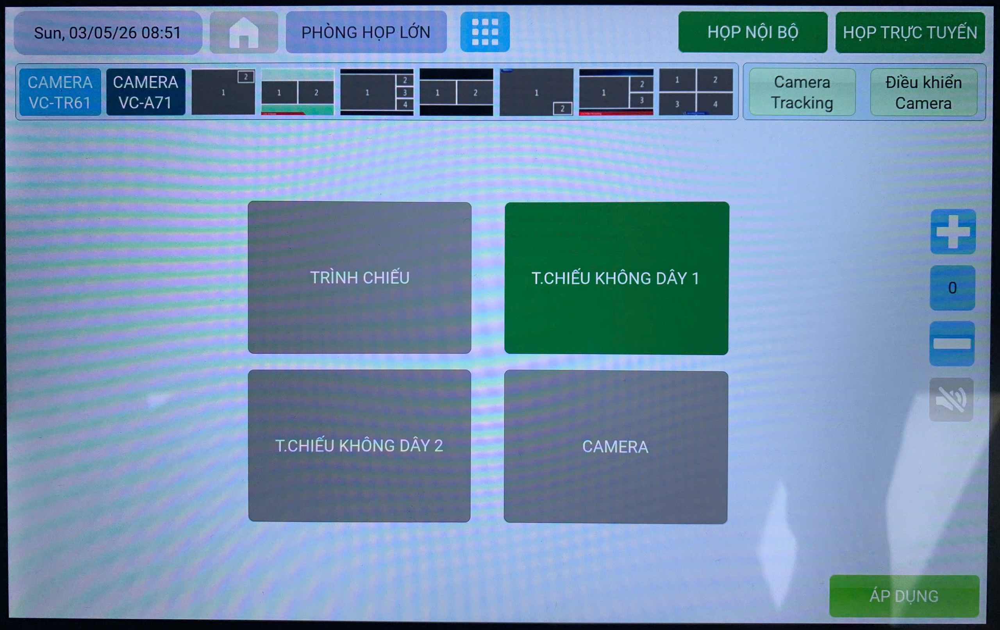
Chọn trình chiếu không dây 1 và ấn áp dụng
Bật màn hình TV và làm theo hướng dẫn trên màn hình, truy cập vào địa chỉ 10.10.1.22
Người dùng có thể chọn trình chiếu qua browser hoặc qua app, thao tác của 2 cái này tương tự nhau
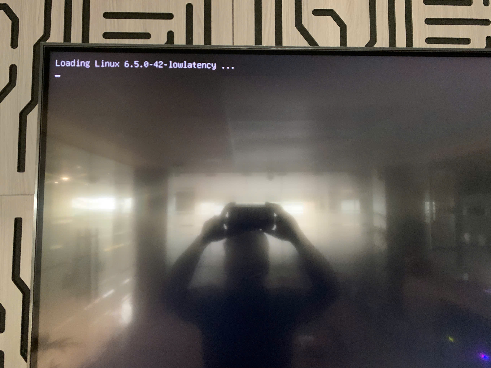
Nếu sau khi bật TV mà màn hình đen và góc trái màn hình hiển thị dòng chữ này
Xin hãy đi ra tủ rack và tắt đi bật lại nút nguồn màu xanh trên thiết bị, thiết bị sẽ hoạt động bình thường sau khi khởi động lại
Sau khi tải và cài đặt app VIA vui lòng chọn cuộc họp
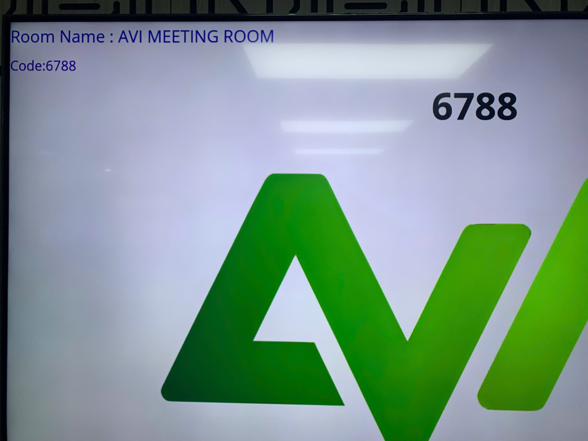
App VIA sẽ yêu cầu code bạn có thể tìm thấy code này ở góc chính giữa và góc trái của màn hình
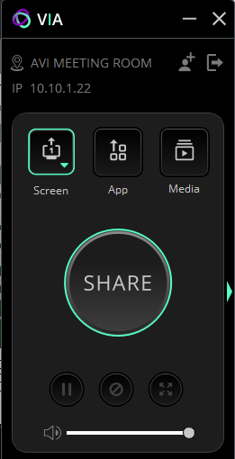
Sau khi nhập code bạn có thể ấn nút "Share" để bắt đầu chia sẻ màn hình
Trên thiết bị di động sẽ cần tải app hoặc có thể dùng trực tiếp qua Airplay
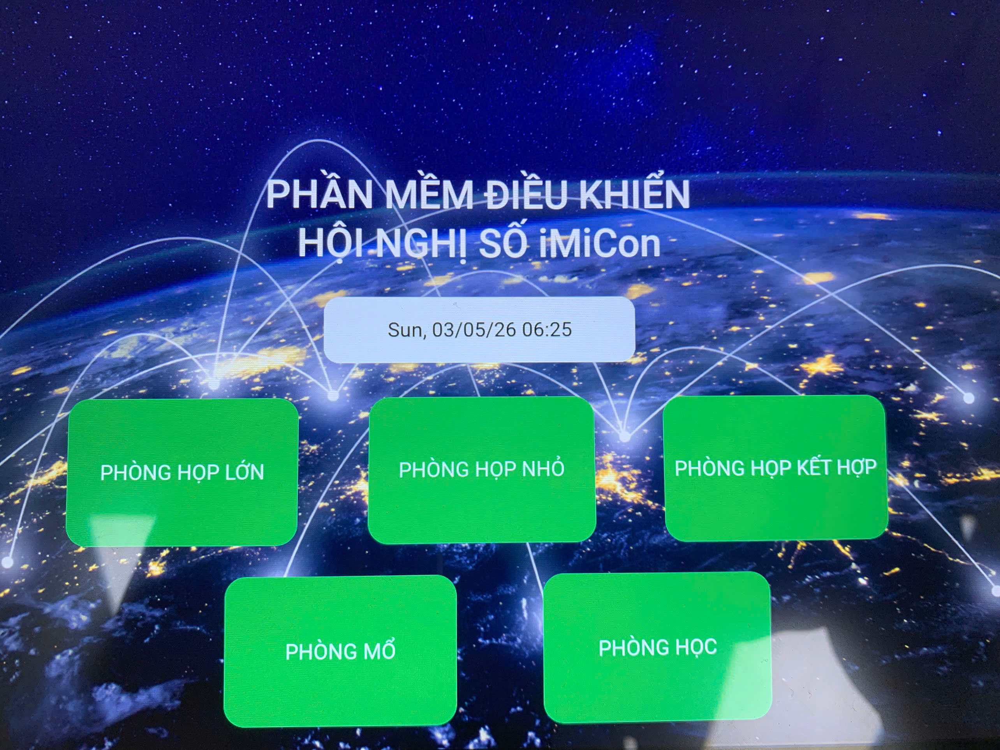
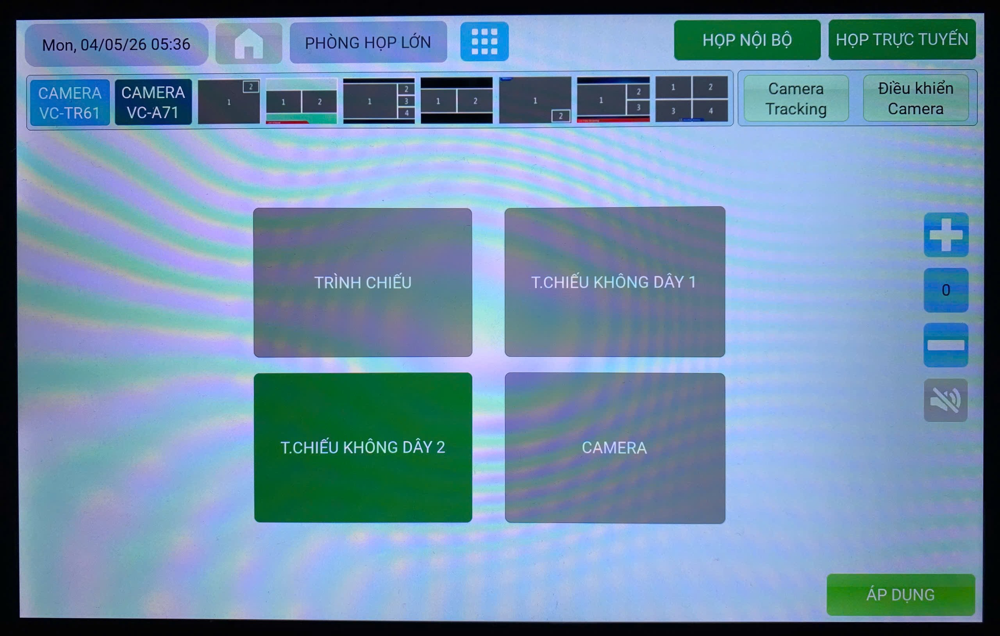
Chọn trình chiếu không dây 2 và ấn áp dụng
Lưu ý: Trình chiếu không dây 2 không sử dụng được cho phòng họp nhỏ
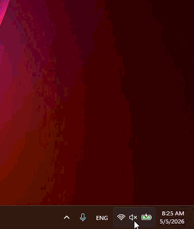
Tìm tính năng cast
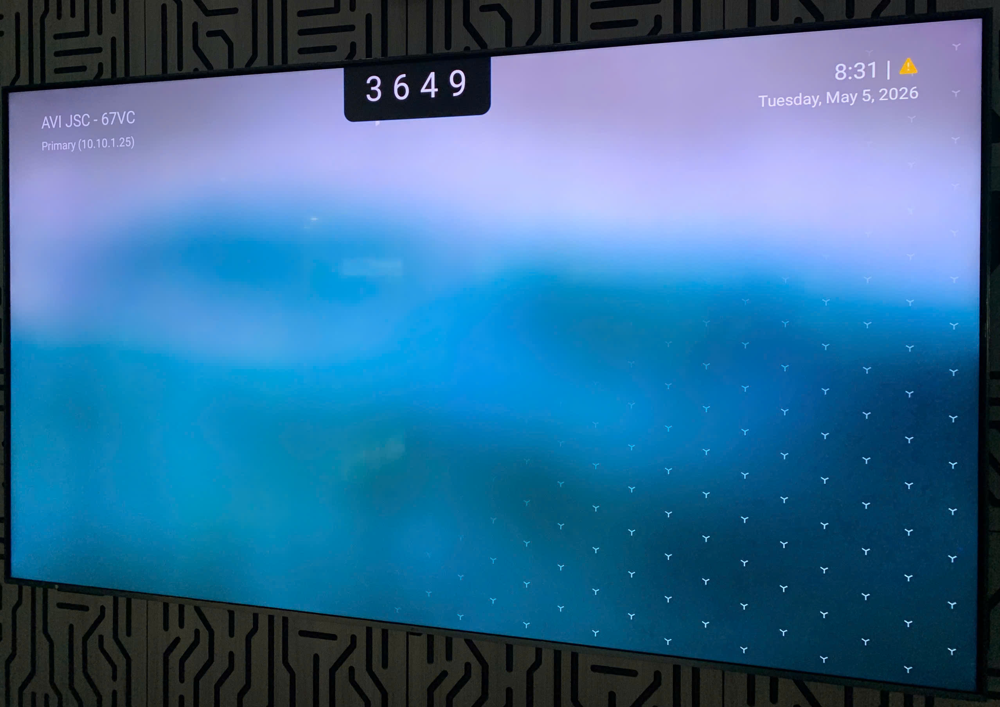
Code sẽ hiển thị ở góc trên chính giữa màn hình
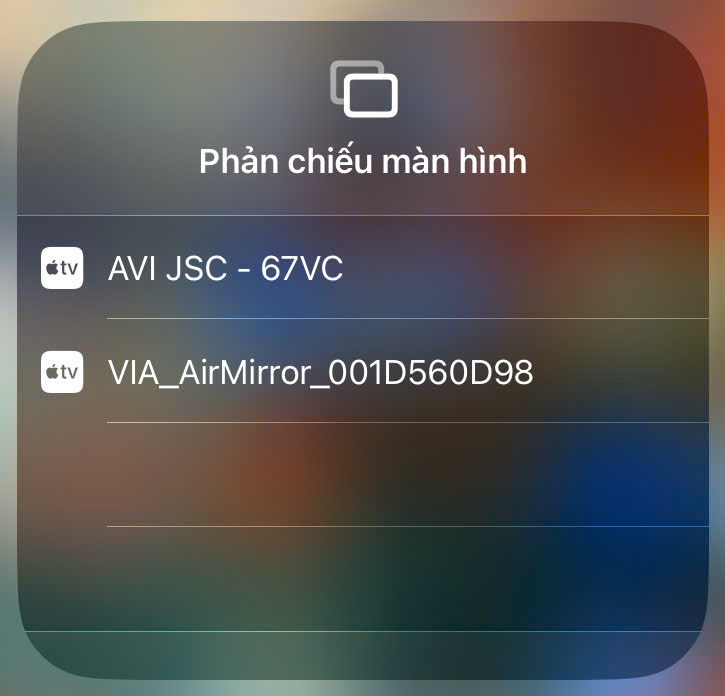
Poly G62 có hỗ trợ Miracast (Android/Windows) và Airplay (Apple), khi dùng Airplay thiết bị có tên là AVI JSC - 67VC
Lưu ý: Trình chiếu trực tiếp lên TV sẽ không sử dụng được loa phòng
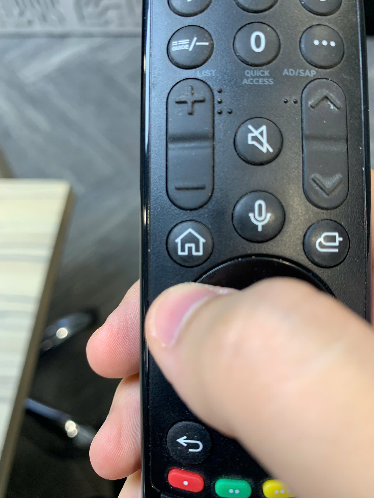
Để trình chiếu lên LG TV cần bật màn sau đó ấn nút home
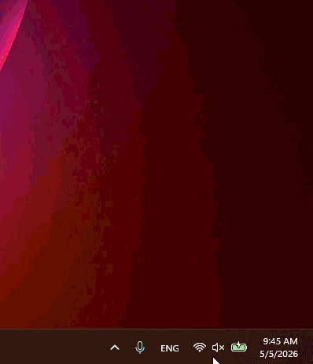
Tìm tính năng cast trên máy, trình chiếu trực tiếp lên TV không cần code